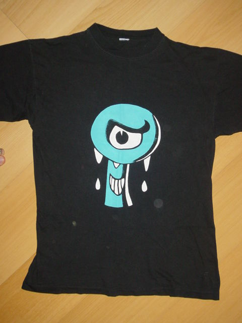
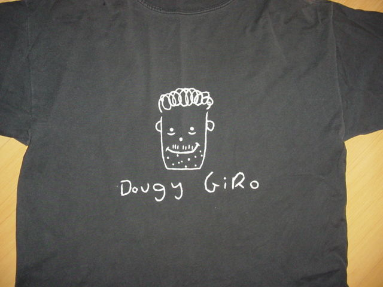
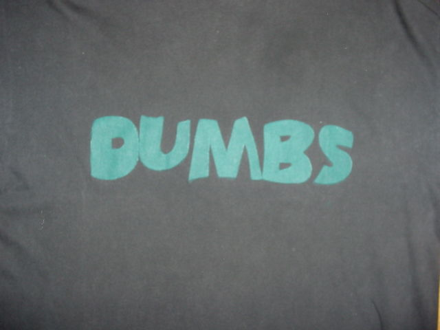

Mais trabalhosa e demorada que a pintura com a caneta para tecido, a utilização da tinta para tecido tem a vantagem de poder ser usada em camisetas de qualquer cor, além do resultado final ficar bem mais apresentável, com aparência de uma estampa de verdade.
A tinta pode ser encontrada em papelarias e lojas de armarinhos também, em uma infinidade de cores. Os potes são pequenos, mas duram bastante. A marca mais utilizada é a Acrilex.
Material
- Uma camiseta de qualquer cor
- Potes de tinta para tecido nas cores desejadas
- Pincel normal
- Pedaço de papelão maior que o desenho
- Pote de água e pano para limpar o pincel (opcional)
Como fazer a pintura
- Coloque o pedaço de papelão dentro da camiseta para que a tinta não vaze para a parte de trás da camiseta;
- Coloque a matriz em chapa em cima da camiseta, na área desejada a se pintar;
- Dê um jeito de fixar a chapa, colocando pesos na bordas, ou a prendendo ao tecido com gampos de roupa;
- Com o pincel, pinte a camiseta, cuidando para que a tinta não vaze pelas bordas dos buracos da chapa;
- Espere a 1ª mão de tinta secar e depois aplique a 2ª mão;
- Novamente espere secar e aplique a 3ª mão de tinta;
- Três mãos de tinta costumam ser suficientes. Se quiser, aplique mais, sempre esperando a tinta secar até reaplicá-la;
- Com tudo pronto e a tinta seca, deixe a camiseta num lugar arejado e espere pelo menos 2 dias para lavá-la.
Algumas camisetas que pintei

Símbolo da banda Ultraje a Rigor, este periscópio de submarino me deu MUITO trabalho para fazer, mas gostei bastante do resultado, parece uma estampa "de verdade".
O desenho estava na capa de um LP antigo da banda que eu tinha lá em casa, mas eu tinha dois problemas: ele era com muitos detalhes (não dava pra fazer uma matriz em chapa) e era muito pequeno, eu precisava ampliá-lo. Então esse tive que fazer o molde em papel mesmo, e consegui ampliá-lo com a técnica dos quadradinhos.
Para pintar o desenho na camiseta, primeiro fiz vários furinhos em todo o desenho e coloquei o papel por cima da camiseta. Com o pincel, usei os furinhos para fazer pinguinhos de tinta na camiseta, para servir de marcação, um pontilhado. Depois de secar, tirei o papel e brinquei de ligar os pontinhos para fazer os contornos do desenho na camiseta. Por último, preenchi os espaços, pintando de branco e azul as área internas.

Esta foi outra que não usei matriz de chapa, pois o desenho era muito simples, nem valia a pena. Mais uma vez precisei ampliar um desenho minúsculo que estava na capa de um LP, dessa vez da banda inglesa Toy Dolls. O desenho é o rosto do Dougy Giro, um mendigo personagem de uma música da banda. Novamente usei a técnica dos furinhos para transpor o desenho para a camiseta.

Dumbs era o nome da minha banda, e esta eu tive a paciência de fazer uma matriz em chapa. Fiz as letras no computador, imprimi e colei em um pedaço de persiana de plástico (aquelas, de por na janela). Com uma tesoura bem forte consegui recortar a persiana no formato das letras e depois foi só colar esse molde na camiseta e pintar nos buracos.
Use outras tintas!
Se você fez o desenho matriz em chapa, outras tintas podem ser usadas no lugar da tinta para tecido, como tinta spray por exemplo, que é muito mais rápida e fácil de usar.
Mas lembre-se que deve ser uma tinta que não vá sair ou desbotar ao lavar a camiseta.
Aprenda mais:
- Como pintar o cabelo com papel crepom
- Como retirar os pontos de uma ferida (machucado, sutura)
- Adesivo para colar na lataria do carro (Plotter, Vinil)
- Como fazer um barquinho de papel
- Como pintar camiseta com caneta para tecido
- Como pintar camiseta com tinta para tecido
- Desenho matriz para pintar na camiseta
- Porta-fitas cassete (k7) feito com palitos de sorvete
- Como fazer etiquetas para fitas cassete (k7)